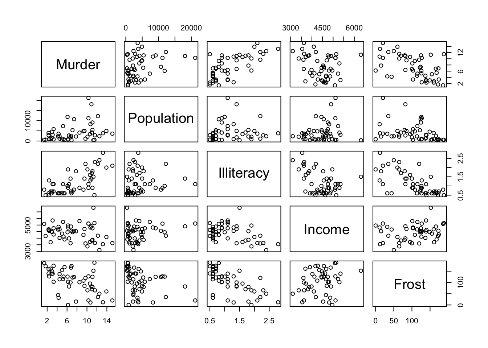
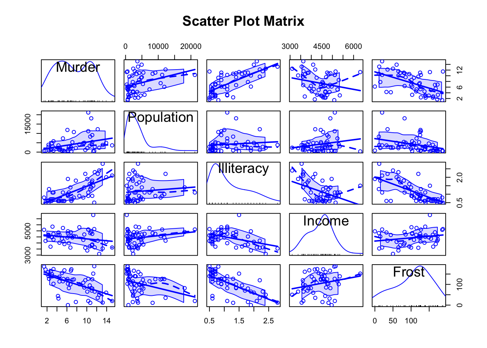
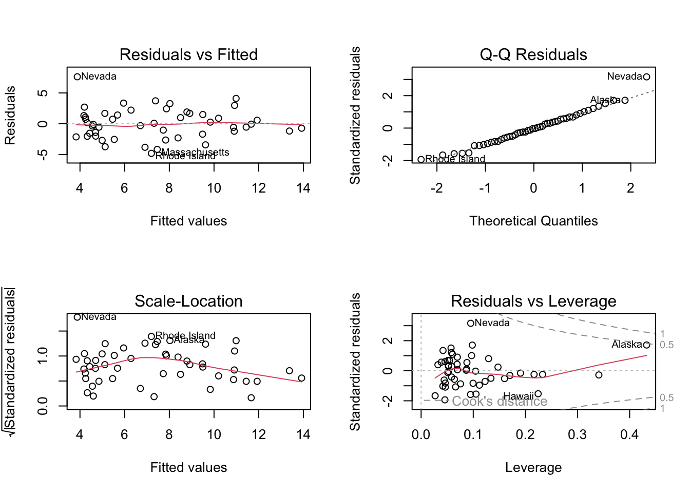

library(car)Loading required package: carDatalibrary(MASS)
library(leaps)
library(bootstrap)
states <- as.data.frame(state.x77[,c("Murder", "Population",
"Illiteracy", "Income", "Frost")])
states Murder Population Illiteracy Income Frost
Alabama 15.1 3615 2.1 3624 20
Alaska 11.3 365 1.5 6315 152
Arizona 7.8 2212 1.8 4530 15
Arkansas 10.1 2110 1.9 3378 65
California 10.3 21198 1.1 5114 20
Colorado 6.8 2541 0.7 4884 166
Connecticut 3.1 3100 1.1 5348 139
Delaware 6.2 579 0.9 4809 103
Florida 10.7 8277 1.3 4815 11
Georgia 13.9 4931 2.0 4091 60
Hawaii 6.2 868 1.9 4963 0
Idaho 5.3 813 0.6 4119 126
Illinois 10.3 11197 0.9 5107 127
Indiana 7.1 5313 0.7 4458 122
Iowa 2.3 2861 0.5 4628 140
Kansas 4.5 2280 0.6 4669 114
Kentucky 10.6 3387 1.6 3712 95
Louisiana 13.2 3806 2.8 3545 12
Maine 2.7 1058 0.7 3694 161
Maryland 8.5 4122 0.9 5299 101
Massachusetts 3.3 5814 1.1 4755 103
Michigan 11.1 9111 0.9 4751 125
Minnesota 2.3 3921 0.6 4675 160
Mississippi 12.5 2341 2.4 3098 50
Missouri 9.3 4767 0.8 4254 108
Montana 5.0 746 0.6 4347 155
Nebraska 2.9 1544 0.6 4508 139
Nevada 11.5 590 0.5 5149 188
New Hampshire 3.3 812 0.7 4281 174
New Jersey 5.2 7333 1.1 5237 115
New Mexico 9.7 1144 2.2 3601 120
New York 10.9 18076 1.4 4903 82
North Carolina 11.1 5441 1.8 3875 80
North Dakota 1.4 637 0.8 5087 186
Ohio 7.4 10735 0.8 4561 124
Oklahoma 6.4 2715 1.1 3983 82
Oregon 4.2 2284 0.6 4660 44
Pennsylvania 6.1 11860 1.0 4449 126
Rhode Island 2.4 931 1.3 4558 127
South Carolina 11.6 2816 2.3 3635 65
South Dakota 1.7 681 0.5 4167 172
Tennessee 11.0 4173 1.7 3821 70
Texas 12.2 12237 2.2 4188 35
Utah 4.5 1203 0.6 4022 137
Vermont 5.5 472 0.6 3907 168
Virginia 9.5 4981 1.4 4701 85
Washington 4.3 3559 0.6 4864 32
West Virginia 6.7 1799 1.4 3617 100
Wisconsin 3.0 4589 0.7 4468 149
Wyoming 6.9 376 0.6 4566 173states[1:10,] Murder Population Illiteracy Income Frost
Alabama 15.1 3615 2.1 3624 20
Alaska 11.3 365 1.5 6315 152
Arizona 7.8 2212 1.8 4530 15
Arkansas 10.1 2110 1.9 3378 65
California 10.3 21198 1.1 5114 20
Colorado 6.8 2541 0.7 4884 166
Connecticut 3.1 3100 1.1 5348 139
Delaware 6.2 579 0.9 4809 103
Florida 10.7 8277 1.3 4815 11
Georgia 13.9 4931 2.0 4091 60cor(states) Murder Population Illiteracy Income Frost
Murder 1.0000000 0.3436428 0.7029752 -0.2300776 -0.5388834
Population 0.3436428 1.0000000 0.1076224 0.2082276 -0.3321525
Illiteracy 0.7029752 0.1076224 1.0000000 -0.4370752 -0.6719470
Income -0.2300776 0.2082276 -0.4370752 1.0000000 0.2262822
Frost -0.5388834 -0.3321525 -0.6719470 0.2262822 1.0000000plot(states)
scatterplotMatrix(states, spread=FALSE, smoother.args=list(lty=2),
main="Scatter Plot Matrix")Warning in plot.window(...): "spread" is not a graphical parameterWarning in plot.window(...): "smoother.args" is not a graphical parameterWarning in plot.xy(xy, type, ...): "spread" is not a graphical parameterWarning in plot.xy(xy, type, ...): "smoother.args" is not a graphical parameterWarning in title(...): "spread" is not a graphical parameterWarning in title(...): "smoother.args" is not a graphical parameterWarning in plot.window(...): "spread" is not a graphical parameterWarning in plot.window(...): "smoother.args" is not a graphical parameterWarning in plot.xy(xy, type, ...): "spread" is not a graphical parameterWarning in plot.xy(xy, type, ...): "smoother.args" is not a graphical parameterWarning in title(...): "spread" is not a graphical parameterWarning in title(...): "smoother.args" is not a graphical parameterWarning in axis(side = side, at = at, labels = labels, ...): "spread" is not a
graphical parameterWarning in axis(side = side, at = at, labels = labels, ...): "smoother.args" is
not a graphical parameterWarning in plot.window(...): "spread" is not a graphical parameterWarning in plot.window(...): "smoother.args" is not a graphical parameterWarning in plot.xy(xy, type, ...): "spread" is not a graphical parameterWarning in plot.xy(xy, type, ...): "smoother.args" is not a graphical parameterWarning in title(...): "spread" is not a graphical parameterWarning in title(...): "smoother.args" is not a graphical parameterWarning in plot.window(...): "spread" is not a graphical parameterWarning in plot.window(...): "smoother.args" is not a graphical parameterWarning in plot.xy(xy, type, ...): "spread" is not a graphical parameterWarning in plot.xy(xy, type, ...): "smoother.args" is not a graphical parameterWarning in title(...): "spread" is not a graphical parameterWarning in title(...): "smoother.args" is not a graphical parameterWarning in axis(side = side, at = at, labels = labels, ...): "spread" is not a
graphical parameterWarning in axis(side = side, at = at, labels = labels, ...): "smoother.args" is
not a graphical parameterWarning in plot.window(...): "spread" is not a graphical parameterWarning in plot.window(...): "smoother.args" is not a graphical parameterWarning in plot.xy(xy, type, ...): "spread" is not a graphical parameterWarning in plot.xy(xy, type, ...): "smoother.args" is not a graphical parameterWarning in title(...): "spread" is not a graphical parameterWarning in title(...): "smoother.args" is not a graphical parameterWarning in axis(side = side, at = at, labels = labels, ...): "spread" is not a
graphical parameterWarning in axis(side = side, at = at, labels = labels, ...): "smoother.args" is
not a graphical parameterWarning in plot.window(...): "spread" is not a graphical parameterWarning in plot.window(...): "smoother.args" is not a graphical parameterWarning in plot.xy(xy, type, ...): "spread" is not a graphical parameterWarning in plot.xy(xy, type, ...): "smoother.args" is not a graphical parameterWarning in title(...): "spread" is not a graphical parameterWarning in title(...): "smoother.args" is not a graphical parameterWarning in axis(side = side, at = at, labels = labels, ...): "spread" is not a
graphical parameterWarning in axis(side = side, at = at, labels = labels, ...): "smoother.args" is
not a graphical parameterWarning in plot.window(...): "spread" is not a graphical parameterWarning in plot.window(...): "smoother.args" is not a graphical parameterWarning in plot.xy(xy, type, ...): "spread" is not a graphical parameterWarning in plot.xy(xy, type, ...): "smoother.args" is not a graphical parameterWarning in title(...): "spread" is not a graphical parameterWarning in title(...): "smoother.args" is not a graphical parameterWarning in plot.window(...): "spread" is not a graphical parameterWarning in plot.window(...): "smoother.args" is not a graphical parameterWarning in plot.xy(xy, type, ...): "spread" is not a graphical parameterWarning in plot.xy(xy, type, ...): "smoother.args" is not a graphical parameterWarning in title(...): "spread" is not a graphical parameterWarning in title(...): "smoother.args" is not a graphical parameterWarning in plot.window(...): "spread" is not a graphical parameterWarning in plot.window(...): "smoother.args" is not a graphical parameterWarning in plot.xy(xy, type, ...): "spread" is not a graphical parameterWarning in plot.xy(xy, type, ...): "smoother.args" is not a graphical parameterWarning in title(...): "spread" is not a graphical parameterWarning in title(...): "smoother.args" is not a graphical parameterWarning in plot.window(...): "spread" is not a graphical parameterWarning in plot.window(...): "smoother.args" is not a graphical parameterWarning in plot.xy(xy, type, ...): "spread" is not a graphical parameterWarning in plot.xy(xy, type, ...): "smoother.args" is not a graphical parameterWarning in title(...): "spread" is not a graphical parameterWarning in title(...): "smoother.args" is not a graphical parameterWarning in plot.window(...): "spread" is not a graphical parameterWarning in plot.window(...): "smoother.args" is not a graphical parameterWarning in plot.xy(xy, type, ...): "spread" is not a graphical parameterWarning in plot.xy(xy, type, ...): "smoother.args" is not a graphical parameterWarning in title(...): "spread" is not a graphical parameterWarning in title(...): "smoother.args" is not a graphical parameterWarning in plot.window(...): "spread" is not a graphical parameterWarning in plot.window(...): "smoother.args" is not a graphical parameterWarning in plot.xy(xy, type, ...): "spread" is not a graphical parameterWarning in plot.xy(xy, type, ...): "smoother.args" is not a graphical parameterWarning in title(...): "spread" is not a graphical parameterWarning in title(...): "smoother.args" is not a graphical parameterWarning in plot.window(...): "spread" is not a graphical parameterWarning in plot.window(...): "smoother.args" is not a graphical parameterWarning in plot.xy(xy, type, ...): "spread" is not a graphical parameterWarning in plot.xy(xy, type, ...): "smoother.args" is not a graphical parameterWarning in title(...): "spread" is not a graphical parameterWarning in title(...): "smoother.args" is not a graphical parameterWarning in plot.window(...): "spread" is not a graphical parameterWarning in plot.window(...): "smoother.args" is not a graphical parameterWarning in plot.xy(xy, type, ...): "spread" is not a graphical parameterWarning in plot.xy(xy, type, ...): "smoother.args" is not a graphical parameterWarning in title(...): "spread" is not a graphical parameterWarning in title(...): "smoother.args" is not a graphical parameterWarning in plot.window(...): "spread" is not a graphical parameterWarning in plot.window(...): "smoother.args" is not a graphical parameterWarning in plot.xy(xy, type, ...): "spread" is not a graphical parameterWarning in plot.xy(xy, type, ...): "smoother.args" is not a graphical parameterWarning in title(...): "spread" is not a graphical parameterWarning in title(...): "smoother.args" is not a graphical parameterWarning in axis(side = side, at = at, labels = labels, ...): "spread" is not a
graphical parameterWarning in axis(side = side, at = at, labels = labels, ...): "smoother.args" is
not a graphical parameterWarning in plot.window(...): "spread" is not a graphical parameterWarning in plot.window(...): "smoother.args" is not a graphical parameterWarning in plot.xy(xy, type, ...): "spread" is not a graphical parameterWarning in plot.xy(xy, type, ...): "smoother.args" is not a graphical parameterWarning in title(...): "spread" is not a graphical parameterWarning in title(...): "smoother.args" is not a graphical parameterWarning in axis(side = side, at = at, labels = labels, ...): "spread" is not a
graphical parameterWarning in axis(side = side, at = at, labels = labels, ...): "smoother.args" is
not a graphical parameterWarning in plot.window(...): "spread" is not a graphical parameterWarning in plot.window(...): "smoother.args" is not a graphical parameterWarning in plot.xy(xy, type, ...): "spread" is not a graphical parameterWarning in plot.xy(xy, type, ...): "smoother.args" is not a graphical parameterWarning in title(...): "spread" is not a graphical parameterWarning in title(...): "smoother.args" is not a graphical parameterWarning in plot.window(...): "spread" is not a graphical parameterWarning in plot.window(...): "smoother.args" is not a graphical parameterWarning in plot.xy(xy, type, ...): "spread" is not a graphical parameterWarning in plot.xy(xy, type, ...): "smoother.args" is not a graphical parameterWarning in title(...): "spread" is not a graphical parameterWarning in title(...): "smoother.args" is not a graphical parameterWarning in plot.window(...): "spread" is not a graphical parameterWarning in plot.window(...): "smoother.args" is not a graphical parameterWarning in plot.xy(xy, type, ...): "spread" is not a graphical parameterWarning in plot.xy(xy, type, ...): "smoother.args" is not a graphical parameterWarning in title(...): "spread" is not a graphical parameterWarning in title(...): "smoother.args" is not a graphical parameterWarning in plot.window(...): "spread" is not a graphical parameterWarning in plot.window(...): "smoother.args" is not a graphical parameterWarning in plot.xy(xy, type, ...): "spread" is not a graphical parameterWarning in plot.xy(xy, type, ...): "smoother.args" is not a graphical parameterWarning in title(...): "spread" is not a graphical parameterWarning in title(...): "smoother.args" is not a graphical parameterWarning in plot.window(...): "spread" is not a graphical parameterWarning in plot.window(...): "smoother.args" is not a graphical parameterWarning in plot.xy(xy, type, ...): "spread" is not a graphical parameterWarning in plot.xy(xy, type, ...): "smoother.args" is not a graphical parameterWarning in title(...): "spread" is not a graphical parameterWarning in title(...): "smoother.args" is not a graphical parameterWarning in axis(side = side, at = at, labels = labels, ...): "spread" is not a
graphical parameterWarning in axis(side = side, at = at, labels = labels, ...): "smoother.args" is
not a graphical parameterWarning in plot.window(...): "spread" is not a graphical parameterWarning in plot.window(...): "smoother.args" is not a graphical parameterWarning in plot.xy(xy, type, ...): "spread" is not a graphical parameterWarning in plot.xy(xy, type, ...): "smoother.args" is not a graphical parameterWarning in title(...): "spread" is not a graphical parameterWarning in title(...): "smoother.args" is not a graphical parameterWarning in plot.window(...): "spread" is not a graphical parameterWarning in plot.window(...): "smoother.args" is not a graphical parameterWarning in plot.xy(xy, type, ...): "spread" is not a graphical parameterWarning in plot.xy(xy, type, ...): "smoother.args" is not a graphical parameterWarning in title(...): "spread" is not a graphical parameterWarning in title(...): "smoother.args" is not a graphical parameterWarning in axis(side = side, at = at, labels = labels, ...): "spread" is not a
graphical parameterWarning in axis(side = side, at = at, labels = labels, ...): "smoother.args" is
not a graphical parameterWarning in plot.window(...): "spread" is not a graphical parameterWarning in plot.window(...): "smoother.args" is not a graphical parameterWarning in plot.xy(xy, type, ...): "spread" is not a graphical parameterWarning in plot.xy(xy, type, ...): "smoother.args" is not a graphical parameterWarning in title(...): "spread" is not a graphical parameterWarning in title(...): "smoother.args" is not a graphical parameterWarning in plot.window(...): "spread" is not a graphical parameterWarning in plot.window(...): "smoother.args" is not a graphical parameterWarning in plot.xy(xy, type, ...): "spread" is not a graphical parameterWarning in plot.xy(xy, type, ...): "smoother.args" is not a graphical parameterWarning in title(...): "spread" is not a graphical parameterWarning in title(...): "smoother.args" is not a graphical parameterWarning in axis(side = side, at = at, labels = labels, ...): "spread" is not a
graphical parameterWarning in axis(side = side, at = at, labels = labels, ...): "smoother.args" is
not a graphical parameterWarning in axis(side = side, at = at, labels = labels, ...): "spread" is not a
graphical parameterWarning in axis(side = side, at = at, labels = labels, ...): "smoother.args" is
not a graphical parameter
fit <- lm(Murder ~ Population + Illiteracy + Income + Frost,
data=states)
summary(fit)
Call:
lm(formula = Murder ~ Population + Illiteracy + Income + Frost,
data = states)
Residuals:
Min 1Q Median 3Q Max
-4.7960 -1.6495 -0.0811 1.4815 7.6210
Coefficients:
Estimate Std. Error t value Pr(>|t|)
(Intercept) 1.235e+00 3.866e+00 0.319 0.7510
Population 2.237e-04 9.052e-05 2.471 0.0173 *
Illiteracy 4.143e+00 8.744e-01 4.738 2.19e-05 ***
Income 6.442e-05 6.837e-04 0.094 0.9253
Frost 5.813e-04 1.005e-02 0.058 0.9541
---
Signif. codes: 0 '***' 0.001 '**' 0.01 '*' 0.05 '.' 0.1 ' ' 1
Residual standard error: 2.535 on 45 degrees of freedom
Multiple R-squared: 0.567, Adjusted R-squared: 0.5285
F-statistic: 14.73 on 4 and 45 DF, p-value: 9.133e-08confint(fit) 2.5 % 97.5 %
(Intercept) -6.552191e+00 9.0213182149
Population 4.136397e-05 0.0004059867
Illiteracy 2.381799e+00 5.9038743192
Income -1.312611e-03 0.0014414600
Frost -1.966781e-02 0.0208304170predict(fit) Alabama Alaska Arizona Arkansas California
10.988208 8.025660 9.487003 9.833319 10.874248
Colorado Connecticut Delaware Florida Georgia
5.114055 6.910422 5.462317 8.788211 10.921620
Hawaii Idaho Illinois Indiana Iowa
9.619843 4.240723 7.870452 5.681061 4.325457
Kansas Kentucky Louisiana Maine Maryland
4.597313 8.915059 13.921176 4.702773 6.285205
Massachusetts Michigan Minnesota Mississippi Missouri
7.458346 7.379767 4.991491 11.929648 5.951937
Montana Nebraska Nevada New Hampshire New Jersey
4.257284 4.436848 3.878958 4.693123 7.836137
New Mexico New York North Carolina North Dakota Ohio
10.906439 11.441232 10.204837 5.127165 7.315911
Oklahoma Oregon Pennsylvania Rhode Island South Carolina
6.703233 4.556936 8.390060 7.195966 11.664926
South Dakota Tennessee Texas Utah Vermont
3.826747 9.497641 13.376076 4.328102 4.175207
Virginia Washington West Virginia Wisconsin Wyoming
8.500933 4.848289 7.728081 5.535459 4.199096 # Model diagnostic
par(mfrow=c(2,2))
plot(fit)
# Unusual observations
# Outliers, High-leverage points, Influential observations
# Transforming variables
# Model Comparisions
fit2 <- lm(Murder ~ Population + Illiteracy, data=states)
anova(fit2, fit)Analysis of Variance Table
Model 1: Murder ~ Population + Illiteracy
Model 2: Murder ~ Population + Illiteracy + Income + Frost
Res.Df RSS Df Sum of Sq F Pr(>F)
1 47 289.25
2 45 289.17 2 0.078505 0.0061 0.9939AIC(fit)[1] 241.6429AIC(fit2)[1] 237.6565# Variable selection
#backward, forward, stepwise, all models comparision
stepAIC(fit, direction="backward")Start: AIC=97.75
Murder ~ Population + Illiteracy + Income + Frost
Df Sum of Sq RSS AIC
- Frost 1 0.021 289.19 95.753
- Income 1 0.057 289.22 95.759
<none> 289.17 97.749
- Population 1 39.238 328.41 102.111
- Illiteracy 1 144.264 433.43 115.986
Step: AIC=95.75
Murder ~ Population + Illiteracy + Income
Df Sum of Sq RSS AIC
- Income 1 0.057 289.25 93.763
<none> 289.19 95.753
- Population 1 43.658 332.85 100.783
- Illiteracy 1 236.196 525.38 123.605
Step: AIC=93.76
Murder ~ Population + Illiteracy
Df Sum of Sq RSS AIC
<none> 289.25 93.763
- Population 1 48.517 337.76 99.516
- Illiteracy 1 299.646 588.89 127.311
Call:
lm(formula = Murder ~ Population + Illiteracy, data = states)
Coefficients:
(Intercept) Population Illiteracy
1.6515497 0.0002242 4.0807366 leaps <-regsubsets(Murder ~ Population + Illiteracy + Income +
Frost, data=states, nbest=4)
shrinkage <- function(fit, k=10){
require(bootstrap)
theta.fit <- function(x,y){lsfit(x,y)}
theta.predict <- function(fit,x){cbind(1,x)%*%fit$coef}
x <- fit$model[,2:ncol(fit$model)]
y <- fit$model[,1]
results <- crossval(x, y, theta.fit, theta.predict, ngroup=k)
r2 <- cor(y, fit$fitted.values)^2
r2cv <- cor(y, results$cv.fit)^2
cat("Original R-square =", r2, "\n")
cat(k, "Fold Cross-Validated R-square =", r2cv, "\n")
cat("Change =", r2-r2cv, "\n")
}
shrinkage(fit)Original R-square = 0.5669502
10 Fold Cross-Validated R-square = 0.5008906
Change = 0.06605965 #
fit3<- glm(Murder ~ Population + Illiteracy + Income + Frost,
data=states, family=Gamma())
fit4<- glm(Murder ~ Population + Illiteracy + Income + Frost,
data=states, family=inverse.gaussian())
fit5<- glm(Murder ~ Population + Illiteracy + Income + Frost,
data=states, family=gaussian())
fit6<- glm(Murder ~ Population + Illiteracy + Income + Frost,
data=states, family=gaussian(link="inverse"))
library(survival)
test1 <- list(time=c(1,2,1,1,5,3,3,3,3,3,4,4,4,4,4,5,5),
status=c(1,1,1,0,1,1,0,1,1,1,0,1,0,1,1,0,0),
x=c(0,2,1,1,1,0,0,0,0,0,0,0,1,1,1,1,1),
sex=c(0,0,0,0,1,1,1,0,0,0,0,0,1,1,1,1,1))
coxph(Surv(time, status) ~ x + sex, test1) Call:
coxph(formula = Surv(time, status) ~ x + sex, data = test1)
coef exp(coef) se(coef) z p
x 0.6644 1.9434 0.6307 1.054 0.2921
sex -2.0496 0.1288 0.8651 -2.369 0.0178
Likelihood ratio test=6.32 on 2 df, p=0.04246
n= 17, number of events= 11 coxph(Surv(time, status) ~ x * sex, test1) Call:
coxph(formula = Surv(time, status) ~ x * sex, data = test1)
coef exp(coef) se(coef) z p
x 1.03794 2.82338 0.64052 1.620 0.105
sex -0.32003 0.72612 1.12302 -0.285 0.776
x:sex -2.43262 0.08781 1.48839 -1.634 0.102
Likelihood ratio test=8.53 on 3 df, p=0.0362
n= 17, number of events= 11